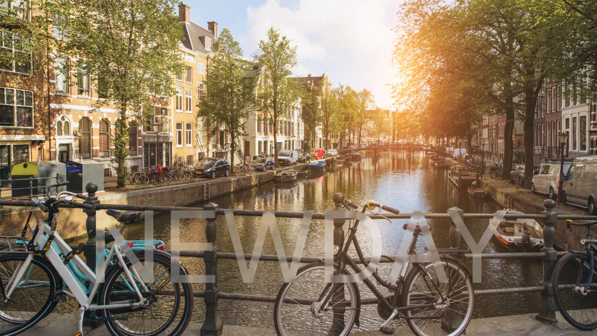

NewDay Agency · Sep 2023 – Jan 2025 · Netherlands, remote
Redesigning KYC without losing the users it’s supposed to protect
A client wanted to add more steps to “guide” users through identity verification. The data said otherwise.

Results
Fewer drop-offs — every compliance step kept
Drop-off measurably eased without touching a single required verification step.Completion-rate tracking sat with the marketing team, so no exact conversion figure is attached here.
Two prototypes, one decision
Built the client’s proposed flow and a simplified alternative side by side, then let usability testing — not the argument — decide which one shipped.
Full-cycle ownership, one account
Discovery through usability testing, presenting the reasoning at every stage — not just the output.
"It’s been a pleasure working with you Sergii. You’ve always been a team player, delivered work on time and with great quality. To anyone reading this, you’ll find someone who has the skills to work on his own, think about a concept, and bring it to life, as well as someone that’s willing and open to take design feedback to build the best solution out there."
Situation
KYC and identity verification satisfy AML and compliance requirements — but every added step is also a point where a real applicant abandons onboarding. As primary design contact on a fintech client’s account, that tension came to a head directly in a client meeting.
None of the required verification steps could simply be removed — they’re regulatory requirements, not UX debt. Any fix had to work within that boundary, not around it.
Deciding insight
The client wanted to add more steps, believing it would improve user guidance. My research pointed the opposite way — drop-off increased with every additional step.
Instead of simply disagreeing, I built two working prototypes — their proposed flow and a simplified version — and walked the team through both from the user’s side, friction point by friction point. Seeing the difference in testing made the decision itself uncontroversial.
Research
Usability sessions tracked where applicants stalled rather than where they complained. The pattern was consistent across both prototypes: every extra confirmation screen read as a new demand, not as reassurance — and the applicants most likely to abandon were the ones the compliance process is meant to admit.
Approach
Full-cycle ownership as primary design contact — discovery through wireframing, UI design, and usability testing — then presenting the reasoning to the client at every stage rather than only the output.
Reusable components came out of the same work: once the verification patterns were settled, later flows assembled from them instead of being redrawn, which cut development rework across the account.
Also at NewDay
Five further client engagements ran alongside the fintech account — Appointlet, Andela, The Luxury Team, Fizbo, and Terry Costa — each with its own discovery, its own stakeholders, and its own measured outcome.
Appointlet
Online Scheduling SaaS · USA — simplified the booking flow for teams coordinating client calls across time zones.
Andela
Global Talent Platform · HR Tech/SaaS — dual-audience UX serving engineers and enterprise clients from one platform.
The Luxury Team
Luxury Real Estate · Fort Lauderdale, Florida — redesigned listing discovery to raise qualified inquiry volume.
Fizbo
FSBO Real Estate Marketplace App · Nashville, Tennessee — took the concept from discovery to a launch-ready UI in five weeks.
Terry Costa
Premier Dress Boutique · Dallas, Texas — e-commerce experience for a boutique's occasion-wear catalog.